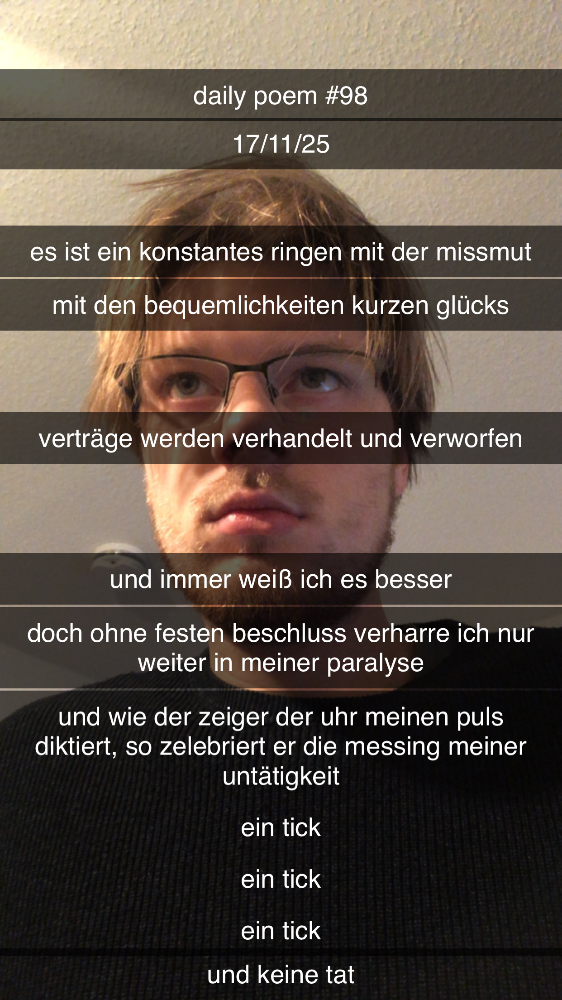

Im Plenum des einsamen Mannes
[98]Es ist ein konstantes Ringen mit der Missmut,
Mit den Bequemlichkeiten kurzen Glücks.
Verträge werden verhandelt und verworfen;
Und immer weiß ich es besser.
Doch ohne festen Beschluss, verharre ich nur weiter in meiner Paralyse.
Und wie der Zeiger der Uhr meinen Puls diktiert,
So zelebriert er die Messung meiner Untätigkeit:
Ein Tick,
Ein Tick,
Ein Tick,
Und keine Tat.
